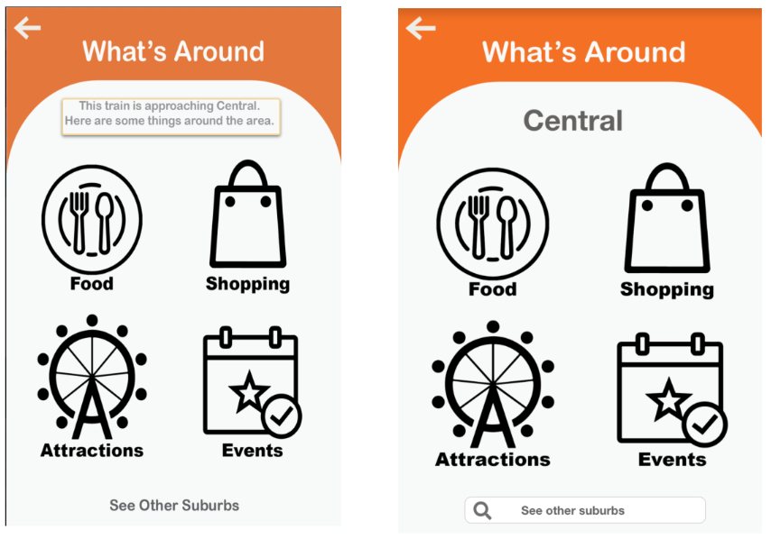
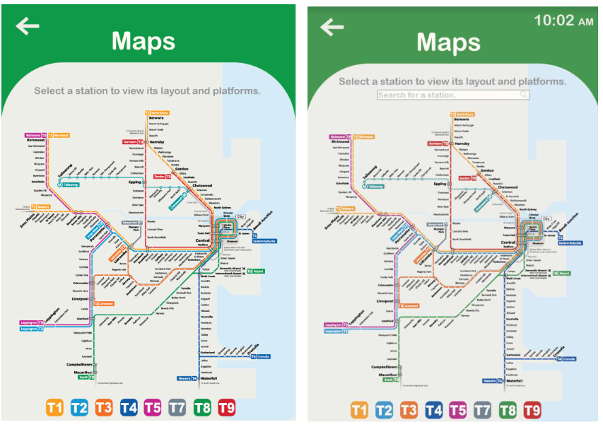

The aim of this project was to create a new innovative device to assist tourists navigating the complex system of NSW transport through a clearer lens. Tourists are the targeted persona due to the difficult experience they have encountered in
the past with the train system, including both interstate and overseas tourists. Major train stations have numerous exits and platforms that make for stressful journeys which can be easily avoided with a design solution that centralizes
important information and delivers it in a seamless user experience.
The solution we have created is a kiosk available at all New South Wales train stations to support tourists or people unfamiliar with the area to plan their train journey called InfoStop. This prototype will not only
provide users with a train
timetable but also give information regarding different suburbs and landmarks to visit near the station. It will also serve as platform for transport users to provide feedback on their train experience, negative or positive.
We have used Adobe XD to create a high-fidelity prototype for our project so we can test the functions in relation to user experience and usability. There are six functions of the application prototype:
All features are made to target and improve the tourist user experience during train transport.
Our group conducted usability testing to have a clear understanding on the usability of our application in multiple stages to acquire feedback that would allow us to come with a highly effective end product. Both the usability test and the
user-experience test took place under different conditions to ensure a variety of data was collected. This technique proved to be beneficial as we received a lot of feedback and constructive criticism coming from different outlooks and
experiences using both people familiar with the New South Wales Train Transport system and those who were not.
The usability testing which took place on the 21st of September 2020 with eight willing participants who were all within the 25 to 35 age group. This evaluation took place in person and some on Microsoft Teams due to social distancing
restrictions and participant terms. These participants were chosen for their frequent use of public transport and their experience with travelling around New South Wales. The usability testing proved to be effective due to the number of
usability issues that were discovered and the recommendations that could be drawn from it to increase productivity of the prototype. Some of the issues included:
The following user-experience testing taking place on the 28th of September 2020 was completed over several sessions where all the five different users went through the same testing procedure to obtain accurate results to further evaluate the usability of our prototype. All testers were from overseas and were unfamiliar with NSW trains and sessions took 20 minutes each. We received different emotional feedback from all the users who completed the testing with our prototype. Some examples of negative user experiences include:
Overall, we received a good amount of feedback for possible improvements for the design that would ensure a more seamless experience.
We used Nielsen’s Usability Heuristics as a form of measurement to determine major and minor usability issues. The Heuristics outline the standard for functions to operate ensuring users can navigate and process the app in the method it was intended. Nielsen’s Usability Heuristics can also be used to improve upon the design and layout of the functions to improve on the functionality to respond better to the persona’s needs and requirements.
For the usability testing we decided that our testing participants should be locals who are experienced with the NSW Train transport system and would be able to critique our application based on their individual user experiences with trains to
ensure that the application was factually correct and easy to understand.
Once willing participants were found we booked in individual sessions in person if they were comfortable with it while also socially distancing and if not, sessions were done online through Microsoft Teams and screen sharing. Testing through
Teams allowed us to give control to the user so they could use the application themselves even though it had to be done online.
Individual sessions usually consisted of first introducing the application idea to the user and briefly explaining the purpose. We let the user view the app first and asked them to give impressions and explanations about what they assume the
functions and button did so we were able to receive feedback on how easy our application was for users to understand at first glance. The user would then click on buttons and follow prompts and we would record things they did right and things
they did incorrectly. Sessions would typically run for 15 minutes working through two random evaluation scenarios with as little assistance from our group as possible. Participant would be asked if there were any improvement or changes, they
would add. These were also noted and recorded for future evaluation. The age group majority were from 25-35 years of age, eight participants tested.
After all the users had finished testing the application we compiled all the positive and negative results to show any very common trait and issues that would rank as high severity and issues that only would person experienced would rank as low
severity.
Our group made sure that the users were provided with several tasks to complete during the evaluation to have a better overall understanding of the users and its characteristics towards the prototype. The results obtained from several
different scenarios allows our team to have the final application have perfect functionality and behavior that would allow the users to find it useful and easy to work with.
Participants were given two scenarios each at random to work through. The list below includes scenarios created for the participant testing.
Full scenario reports in Appendix A
Overall, the testing went well and was a success with every participant able to complete the evaluation scenarios provided to them. We were able to see the reception of our app to people who used NSW Trains regularly to see if it was a useful
and convenient app for them. All the users found it to be helpful and found certain functions they would use even they are not our targeted persona showing the versatility of the application.
We also received a good amount of feedback for possible improvements to improve the design that would ensure a more seamless experience. Usability must be consistent with the technology people are used to worldwide with similar symbols and
functions that users are familiar with which is further tested in User experience testing. The major usability issues have been resolved after testing and will continue to undergo updates and changes with further testing in the future.
All the major usability issues found while testing have been categorized under the relevant scenarios in which the issue was found.
| Task | Issue | Relevant Heuristic | Severity |
|---|---|---|---|
| Enter in starting point and destination. | User misspelled Circular quay and no suggestion came up for the suggested station. | Error Prevention Help users recognize, diagnose, recover from errors |
Medium |
| Determine which train to board. | Unsure of current time and time till next trains to determine how much time before user should arrive at platform. | Recognition rather than recall. | Medium |
| Task | Issue | Relevant Heuristic | Severity |
|---|---|---|---|
| Rate experience through emoticons. | Distinguishing difference between facial expressions was difficult as emoticons were small and when selected emotion was not highlighted well. | Consistency and Standards | Low |
| When submitting feedback | When submitting feedback there was a lack of confirmation that the system had registered and recorded the feedback. | Visibility of system status and informative feedback. | High |
| Task | Issue | Relevant Heuristic | Severity |
|---|---|---|---|
| Opening events tab | As more windows open returning back to pages becomes a bit difficult. Back button has to be pressed a couple times to return back to home page. | User sense of control and freedom | Medium |
| Opening tabs | Page took a while to load and open, lack of system feedback whether app had crashed or still loading. | Visibility of system status and informative feedback | High |
| Task | Issue | Relevant Heuristic | Severity |
|---|---|---|---|
| Starting on home page | Lack of documentation and help to refer to in case user is unsure of what the button would do if pressed as symbol is unfamiliar. | Help and documentation Match between system and real world |
High |
| Emergency Notification | No clear distinguish between background home screen and new window notification. | Visibility of system status and informative feedback | Medium |
| Task | Issue | Relevant Heuristic | Severity |
|---|---|---|---|
| Starting the new scenario | Screen was left on page from previous scenario and user had trouble going back to the home page to start next task. | User sense of control and freedom | High |
| Finding pathway to Exit 3 | Unable to determine current location in order to understand direction to exit from. | Recognition rather than recall Match between system and real world. |
Medium |
The major usability issues received by more than one testing participant have been listed and these improvements once implemented would ensure a better user experience and increased usability.
| Change | Justification | Severity |
|---|---|---|
| Time and date shown on home page. | User is able to be view time to ensure user can identify which trains is more convenient to board as users had to check their phone or look for a clock nearby to determine the current time. | High |
| Train Arrival count down. | Users are able to view a countdown of how much time they have to reach their station instead of mathematically working it out in their head and reducing human error. | Medium |
| Station map “You are here” | User must be able to identify their location in order to understand which route and direction them must travel in to arrive at their destination as user had to search around for other landmarks to determine their current location. | High |
| Grey out constraint for Emergency button. | Brings user attention to emergency option menu that has shown up and grey out of background prevent user from pressing incorrection functions. | Low |
| Error Messages and suggested corrections | In case user inputs wrong station with incorrect spelling system should assist in correct user to make experience quicker and more efficient. | Medium |
| Home button | For easy access back to home page quickly and efficiently. Also a timer if app is untouched for 20 seconds or more it returns to home page automatically prepared for next user. | High |
The date and time have been added to the home page to allow users a better sense of time instead of referring to an external source. The black square shown the difference between the before and after improved design with the addition of the date and time in the middle of the screen assisting in recognition rather than recall.
For the train times a count down timer was added to allow users to better manage their time to ensure they make their train. The current time has also been added to the new design in the top right-hand corner, so the users do not have to calculate in their head the time till each train.
Red location icon has been added to the map to allow users to better guide themselves through the station. Users will be familiar with the icon and if not, there is a legend present at the top to assist them in identifying the symbol meaning. It allows users to match between the real world better.
Greying out the background functions assist in increasing visibility and minimalistic design with only the emergency button and notification highlighted increase visibility to the function in progress.
Our group used the Experience Evaluation methodology to complete all the testing and evaluation. The users who participated in this evaluation were taken through different situations where they got to use the prototype first handily and were required to give their feelings towards it. This exercise was extremely useful as it allowed us to obtain the emotional feedback from the users in regards to our prototype and how different key factors determine the users overall experience. The aim of this evaluation was satisfied as we obtained extremely accurate feedback about our prototype and it presented us with all the pain points the users faced while using the prototype.
Ideally for the user experience testing we wanted to test the application with tourists, our targeted persona, however due to COVID-19 travel restrictions there is a lack of tourists visiting Australia. To ensure we get the same experience we decided to test people we knew who lived abroad and had visited New South Wales at least once or less. This would simulate tourists limited knowledge of Sydney trains and provide us the necessary data to evaluate the user experience of a tourist using our prototype. The test was conducted via Zoom due to COVID Restrictions and were of minimum of 30 mins to 1 hour during several days of the weeks. During these sessions, the testers (user participants) were given full access and were placed on one to one call with the observers (our group members). The data was recorded on our note taking platform Microsoft OneNote. Each session was about 20 minutes long for each of the five participant we were able to schedule.
We have written user experience stories to provide ourselves with a shared view of the project and this is backed by our user research. Since they include our stakeholders and their feelings, we can create goals which works towards for a specific purpose and determine which areas of the project would need to improve or work well. Each user stories written highlights one main feature used by users and how they interacted and responded to the feature being tested. We have written three user experience stories based off our scenarios.
The main user experiences which was gathered during the evaluation was the ease of use and usability of the application. Since our user research tested a narrow age group of 20-23-year old’s, we are assuming that the features implemented are simple and easy to follow for all age group. Although our initially target audience was tourist, as they may be unfamiliar with Sydney. We have concluded that it may be used for anyone as it is very useful as it is multiple function achieving different purposes such as checking train times, looking at the maps, searching for nearby food etc. Hence, we are focused on designing an application which is easy to use and have functionality which are usable.
| Phases | Main user experiences | Quality of user experiences | Recommendations |
|---|---|---|---|
| Planning | When planning the trip, using the drop-down menu was easy and it was flexible due to the ability to type in the location. | It was good and reliable as it provides a chronological order of the stations. | |
| Viewing the trip | Upon opening the next page, shows a list of times of available trains going to the Central. | It was easy to read and follow as it is in chronological order hence enhancing the user experience. | |
| Opening map button | Upon arriving at Central, I used the map feature to determine where I was and how to exit. | It was hard to use, as it provides a map with many stations and I did not know where Central station was, so it took time to find it. | No Search Bar in map page, difficult to navigate hard to find. |
| Looking at the map of station to determine the exit is useful as it can be hard to navigate with a crowd. | It was good as it is an uncomplicated |
| Phases | Main user experiences | Quality of user experiences | Recommendations |
|---|---|---|---|
| Entering a train | Using the planning feature allowed for me to enter the right train. | It was useful and allowed me to become less anxious because I knew the time. | |
| Witnessing a hazard | On board the train, there was some broken glass due to a broken water bottle. | It was scary and unsafe; I was hesitating as it was not my problem. | |
| Reporting a hazard | I remembered the report button and contacted the train conductor about the potential hazard. | I felt proud and righteous as I know this had help many other commuters. |
| Phases | Main user experiences | Quality of user experiences | Recommendations |
|---|---|---|---|
| Leaving the station | Walking around aimless after leaving the station as I did not know the area enough to go anywhere. | I felt excited but anxious at the same time as it was my first experience in the city. | |
| Using the feature | Using the “What’s around, I can see different categories to choose from such as food, attraction, shopping and event. | This was easy to use as they were large button which stands out on the page. Hence, I felt relieved. | There was no nearest places button as I want to see the closest thing around me rather than all the categories. |
| Upon choosing food and selecting a place. A map appears showing the navigation to the place from my current location. | This is useful as it is mostly automated and require very few inputs which made me feel contented. | ||
| Going to the place and leaving a review | Reaching the place, I had a great dinner and wanted to rate the diner, so I used the application to leave my review. | I felt happy and content from being full. |
After completing the user experience evaluation, we discovered a common trend in the difficulties and issues users faced in regard to our prototype. We discovered that users had difficulties when it came to finding something directly. For the
“What’s Around” Screen it does not have a search button making it exceedingly difficult for the users to navigate. Therefore, we have decided to add in the search button to the top left corner of the screen.
Another feedback we got from the users was that they wanted to have an option where they could find the closest attractions/restaurants around them. Therefore, we have planned to add a “What’s Around” Tab on the screen to allow the users to
find the local attractions. This feature would make our app more functional to a user as it will have subcategories that will be divided amongst the 4 main categories of Food, Shopping, Event, Attractions.
Lastly, we also got a feedback from our users that on the “Map Screen” they had difficulties in finding the exact train station when looking at the map. As of now the users have to look around and zoom in and out on the map to find their train
station. We plan to streamline the entire process and make it more convenient for the users by installing a search bar on the top so that they can type in the station name and be able to select it directly and also be able to find out about any
information on trackwork/ delays at that specific train station. Overall, we have decided to have these new features rolled out onto the application to make the app more user friendly.
What's Around: Before & After
Maps: Before & After
A major limitation of the usability evaluation was it was difficult to find people to test the prototype who were unfamiliar with the with the NSW transport structure and process. Due to current COVID-19 environment and reduced tourism and
closed borders between states reduced the number of people to test the prototype from who matched our persona.
Another limitation came from the online testing of some users as due to social distancing rules some users felt more comfortable trailing the app through online video calling using platforms such as zoom. While it was still an effective way to
test some limitations came through the lack of emotional connection and difficulty in viewing the body response to testing the prototype such as hesitation and incorrect usage of the app. Specifically in user-experience testing as emotions were
harder to read and communicate though technology.
As this system will be deployed by NSW Transport it would be ideal if all transport vehicle timetables were available on the prototype. The application is limited to only trains and is only available at train stations. It could potentially also
contain the timetables and maps of buses, ferries, and light rail.
1. Plan a trip from Chatswood to Circular Quay
To accomplish this scenario the user must enter in the starting point as Chatswood and the Destination as Circular Quay. Once it is entered in the system will find and list the future trains in ascending order from earliest to latest train
available. The user can use the time, trainline and any delays present to determine which train they will take to reach their destination that Is most convenient to them.
2. Leave feedback regarding an experience on NSW Transport Trains
Users recall on an event that may have occurred on their train journey and report it. From the home page they have to press the speech bubble icon labeled “Feedback.” They then must answer the provided questions. First asks for an emoticon
reaction to the event that took place whether it was positive or negative. Then than can choose to answer the next two questions or not. When they have completed their feedback report, they press submit to send it through.
3. View the places to visit around Town Hall station
Starting from the home page users would need to open the “What’s Around” tab and click through the four options to discovering attraction, events, restaurants, and shops around that would best interest the user. To view Town Hall station
specifically it would require using the search bar to find to select Town Hall station.
4. Call the Station attendant to report unsafe activity at the train station.
In the event of unsafe activity occurring on a station or train the user can use the Hazard button to call for assistance and alert security of hazardous activity taking place. To do this the user must select on the attention button icon in the
bottom left hand corner and a prompt will come up for the user to confirm or deny the action. When this page opens the rest of the app is restricted and the prompt must be responded to.
5. View the map for Central Station and determine route to leave station from Exit 3.
In case a person is lost or in need in of guidance the Map function is used. It is a button available on the home screen. Use of it allows the user to view the NSW train map as well as individually select stations to view the map to guide
themselves to the exit/street they wish to go on.
Planning a trip to Central
I was sat on a bench at Strathfield station. I needed to plan a trip to central. I used the Info Stop application to plan and view ways to get to Central from Strathfield. Once the home page appeared, I used the plan panel to choose my station
and the destination. This was very easy to do as it was a drop-down menu, and it was in chronological order. Once choosing the two places it would automatically get the list of trains times and the platform number. This was too in chronological
order by time hence made it easier to determine the closest train.
I waited for the train and boarded it once it arrived. I tried some other function such as ‘View’ which brings me to a page full of train lines available for my train line. This was very clunky and too much information, so I clicked back and
felt very confused on why they had two options to view train lines.
Upon arriving at central, there were some exit signs shown but it was really crowded, and everyone was rushing for the exits. I felt very pressured to move along the flow of the crowd and in the end got lost. I went back onto the application
and clicked on maps and saw my location indicated by a dot and saw the layout of central station. I felt more secure that I can follow something and had a better view of how to navigate the underground. As I move towards the exit, the dot on
the map moved along as well which is also a great indicator of where I was.
2. Calling for assistance
I have just used the planning feature of info stop to get an idea on which train to catch. I felt nervous as the time which I saw on the application was incorrect and later heard an announcement about delays for my train. I became more agitated
as time flowed by but in the end the train arrived, and I hurried on to it. I went down into the lower level of the carriage and scanned for anyone in the carriage. I saw that there was one or two people sitting from the far-end of each other
and sat down in a two-seater in middle of the carriage. As I seats comfortably, I scrolled through my phone as I normally would and occasionally would look up if any noise unfamiliarly is heard.
After a few stations passed, I saw a couple of boys waiting down to my carriage and one of them wasn’t holding on the railing as the train jerks and made one of them drop their glass bottle of water. Looking at the potential hazard, which is
present, I can see the boys carefully picking up the shards of glass. I was hesitated to respond to the situation since it was not my problem. But the thought of them getting a cut because of the glass made me worried so I told them not to
touch it.
I grabbed my phone as I remembered that there was a feature which calls the train conductor to report anything. I click the assistance button and contacted the train conductor. I tried to carefully run down the situation for the conductor, I
felt very nervous and worried so I was stuttering a lot. In the end, it was concluded that the train conductor will come down to this carriage and clean up the glass shards and mop the floor. I felt proud as I knew I helped other commuter on
the train from this hazard.
3. "What's Around"
After leaving the station, I was walking aimlessly as I did not know the area enough to go anywhere. I had thoughts such as “am I lost?”, “is this the right place?” etc. Hence, I felt very anxious but excited. I pulled out the info stop
application and used the “What’s around” feature which allowed me to see what shops and restaurants were around the area. The page had 4 categories, food, attraction, shopping and events. I felt confused as I felt that there should have been a
nearest button which shows any available option to me instead of choosing a specific category and displaying those instead.
Since I was hungry, I chose food, and it pops up a list of different food choices and how far it is from my location. Upon choosing on the restaurant I wanted to go. A map takes over my screen and gave me direction through a dotted line towards
my destination. It felt tired but happy once I arrived at my destination, I thought ‘wow, I walked so far I can eat a horse.’ As I ordered and ate the burger and fries. I felt grateful and content with my meal and for Info Stop for providing
such information for me to go to this restaurant.
After finishing my meal, I saw the Info Stop suggested me to leave a review for this restaurant, so I decided to do this and gave it a great review. I felt very happy and certain about the meal which the restaurant provided. I continued to use
the application to search for shopping stores which interested me and spend the rest of the day using the application to my advantage.